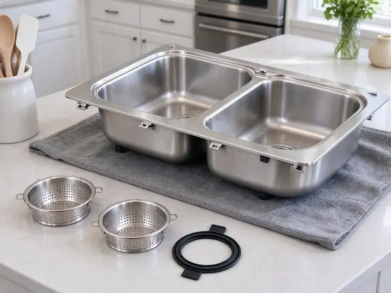

Grease Trap Installation in Winter Haven, FL
Opening or remodeling a kitchen in Winter Haven, FL? We size, set and connect grease interceptors that pass inspection the first time.
- Fast Commercial Scheduling
- Permit and Inspection Support
- Experienced Local Plumbers
- Code Compliant Installations

Expert Grease Trap Installation Services in Winter Haven, FL.
We work around your service hours so installation does not cost you a busy shift.
Dependable Grease Trap Installation for Businesses in Winter Haven, FL
HDF Plumbing specializes in expert grease trap installation for commercial kitchens and some residential applications across Winter Haven, FL. We understand the critical role a properly installed grease trap plays in preventing clogs, avoiding costly repairs, and maintaining health code compliance.
Our expertise includes:
- Preventive solutions for FOG (fats, oils, greases)
- Residential grease interceptor setup for high-volume use.
- Code-compliant installations

Additional Kitchen Plumbing Services in Winter Haven, FL
Our kitchen plumbing services in Winter Haven, FL cover sinks, disposals, dishwashers, and grease traps so your kitchen stays clean, safe, and fully functional.


Customers
Why Choose HDF Plumbing for Grease Trap Installation in Winter Haven, FL?
Our commercial crews know what local inspectors look for, from flow control devices to accessible lids. That means fewer delays and a system that stays compliant for the long term.
- Prevent Clogs, A new grease trap reliably separates FOG from wastewater, protecting your drainage system from blockages.
- Accurate Sizing, We calculate gallons per minute for every connected sink and dishwasher before selecting a unit.
- Experienced Plumbers, Our technicians are well trained in the specific methods and requirements for installing various types and sizes of grease traps.
Citywide Coverage
From downtown eateries to suburban cafes, our plumbing crews are familiar with the infrastructure challenges across Winter Haven. We ensure prompt and efficient grease trap installation services throughout the whole metropolitan area.
Experienced Team
Our commercial plumbers have installed grease interceptors ranging from 20 GPM under-sink units to 1,500 gallon outdoor tanks. They understand the sizing standards and how kitchen layouts affect performance.
Safety-First Approach
When installing a grease trap, our plumbers prioritize a safe work environment and strict adherence to plumbing codes in Winter Haven. You can trust HDF Plumbing to complete the job responsibly and correctly the first time.
Trusted Certified Winter Haven Plumbing Services Professionals
At HDF Plumbing, we take pride in providing licensed, certified plumbing services throughout Winter Haven, FL. Backed by recognized industry credentials, our experienced plumbers combine technical skill with genuine customer care. Whether it is repair, installation, or maintenance, we follow strict safety and quality standards to deliver lasting results you can trust.
Call Us Now PHCC Plumbing Contractor Recognition
PHCC Plumbing Contractor Recognition Better Business Bureau (BBB) Accreditation
Better Business Bureau (BBB) Accreditation Angi Certified Pro
Angi Certified Pro ISO 9001 Quality Management Certification
ISO 9001 Quality Management CertificationReliable Grease Trap Installation Services in Winter Haven, FL
Hydro-Mechanical Grease Trap Installation in Winter Haven, FL
Hydro-mechanical grease traps, also known as automatic grease removal units, offer an active solution for FOG management in Winter Haven, FL. These units often include internal baffles and flow control mechanisms to enhance separation efficiency. We provide expert installation of various hydro-mechanical models, ensuring all electrical and plumbing connections are correctly made for optimal performance and automated FOG removal.

Grease Trap Installation for Schools and Institutions in Winter Haven
School cafeterias, hospitals, senior living facilities and churches with kitchens often need commercial interceptors. These sites usually have large dish machines and steam kettles that push high flow. We size interceptors to handle peak lunch or dinner loads without bypassing grease. Our crews schedule work around school breaks or off hours. We also provide documentation for facility managers and inspectors.
Restaurant Grease Trap Compliance in Winter Haven, FL
Making sure your restaurant's grease trap system in Winter Haven, FL meets all local and state plumbing and environmental codes is crucial. HDF Plumbing is familiar with Florida regulations concerning FOG discharge and commercial kitchen waste. We guarantee that every grease trap installation we perform is fully compliant, helping you avoid penalties and maintain a clean, responsible operation.
Grease Trap Sizing and Placement in Winter Haven, FL
Correct sizing and strategic placement are critical for a grease trap's effectiveness. Installing a unit that is too small will lead to frequent clogs and overflow, while an oversized one can be an unnecessary expense. Our plumbers carefully calculate the required capacity based on your kitchen's water flow, fixture count, and operating hours, ensuring optimal performance for your Winter Haven, FL business.
Large Outdoor Grease Interceptor Installation in Winter Haven
For high-volume commercial kitchens in Winter Haven, large outdoor grease interceptors are often required by code. These large units are installed underground and designed to manage significant amounts of FOG before wastewater enters the municipal sewer system. We handle the whole process, including excavation, precise placement, connection, and final inspection, ensuring a robust and compliant installation.
Commercial Grease Trap Installation in Winter Haven
For restaurants, cafeterias, and any food service business in Winter Haven, a well-functioning grease trap is a must. We specialize in installing commercial-grade grease traps designed to handle high volumes of FOG, ensuring your kitchen operates smoothly and compliantly. Our installations are tailored to the specific needs and capacity requirements of your establishment, preventing costly backups and environmental issues.
New Restaurant Build-Out Grease Traps in Winter Haven
If you are opening a new restaurant, the grease trap is often a key part of plan review. We work with your architect or contractor to size the unit and show it on plumbing plans. We then install it during rough-in so it is ready for inspection. Getting the trap right early avoids expensive changes after the slab is poured. We also coordinate with the city's pretreatment staff when they require a review.

Gravity Grease Interceptor Installation in Winter Haven, FL
Gravity grease interceptors, or GGI units, are larger, usually located outdoors, and rely on the natural difference in specific gravity between FOG and water. These are common for high-volume commercial kitchens. Our team handles the involved excavation, concrete work, and plumbing connections required for proper GGI installation, ensuring compliance with all local Florida ordinances for waste management.
Grease Trap Installation Near Me in Winter Haven, FL
When you search for 'grease trap installation near me' in Winter Haven, FL, HDF Plumbing is your trusted local expert. Our team is ready to provide prompt and efficient service throughout the metropolitan area and surrounding communities. We understand the plumbing needs of businesses and homes in this area.
Searching for 'grease trap installation near me' in Winter Haven, FL? HDF Plumbing is your local commercial plumbing expert. Our teams are positioned to provide quick response and efficient service to businesses across the whole Winter Haven area.
HDF Plumbing at a Glance
- Fully licensed plumbing team covering Winter Haven, FL
- Same-day appointments and 24/7 emergency response
- Clear written estimates, no hidden fees
- 4.9-star rated by 739+ Florida customers
Winter Haven Map
Winter Haven Information
- Population
- 57,109
- Area codes
- 863/407/352
- Service area
- Winter Haven and communities within 40 miles
- Nearby
- Lakeland, Poinciana, Four Corners, Kissimmee
Municipal pretreatment rules and high restaurant volume make careful sizing and solid installation of grease interceptors essential for food businesses in Winter Haven, FL. A high water table across much of Florida affects drainage, septic design, and how easily crews can dig for underground repairs.
Expert Services
Trust our professionals for reliable HDF Plumbing solutions in Winter Haven, FL.
Our Specialized Plumbing Services in Winter Haven, FL
At HDF Plumbing, we provide a complete range of plumbing services across Winter Haven, FL. From leak detection to full system installations, our team ensures fast, precise, and affordable service for both residential and commercial properties. Explore our core services below:


How Our Grease Trap Installation Process Works in Winter Haven, FL
HDF Plumbing follows a clear, step-by-step process to ensure every grease trap installation in Winter Haven, FL is done correctly and to code.
Request a Quote
Contact us at (904) 925-7356 to discuss your grease trap installation needs. We will gather information about your commercial kitchen or property and schedule an on-site assessment.
Site Assessment
Our experienced plumbers will visit your Winter Haven location to evaluate the space, determine the optimal grease trap size, and identify the best placement. We consider factors like kitchen layout, water usage, and local code requirements.
Permit Acquisition
For commercial grease trap installations in Winter Haven, permits are often required. We help you with the necessary paperwork and ensure all local permits are secured before commencing work.
Frequently Asked Questions About Grease Trap Installation in Winter Haven
Small indoor hydromechanical traps usually cost $1,500 to $5,000 installed. Large outdoor gravity interceptors often run $8,000 to $30,000 or more with excavation, concrete and site restoration. We provide a written estimate after a site visit.
Manufacturer warranties vary, with many polyethylene units carrying long structural warranties. We also guarantee our installation workmanship and connections.
Yes, in most cases, installing a new grease trap or replacing an existing one in Winter Haven requires specific permits from the local plumbing authority. HDF Plumbing will guide you through the permitting process, making sure all necessary documentation is submitted and approvals are obtained before beginning work.
Installation time depends on the size and complexity of the grease trap. A small under-sink unit might take a few hours, while a large outdoor interceptor could require several days due to excavation and concrete work. We strive to complete installations efficiently to minimize disruption to your business operations.
Signs you might need a new grease trap include frequent drain clogs, slow drainage in multiple fixtures, persistent foul odors coming from drains, or if your current unit is old, corroded, or no longer meeting local code requirements. An inspection by a professional plumber can verify the need for replacement.
Grease trap installation is a complex commercial plumbing task that requires specialized knowledge, tools, and adherence to strict local codes. Attempting a DIY installation can lead to costly errors, code violations, and potential health hazards. It is always best to hire licensed and qualified plumbers like HDF Plumbing.
HDF Plumbing stands behind our work with a solid warranty on all grease trap installations. The specific warranty period will be outlined in your service agreement and usually covers parts and labor for a designated timeframe. Manufacturer warranties also apply to the grease trap unit itself.
The timeline for grease trap installation depends on the project's scope. A simple under-sink unit might take a few hours. Larger outdoor gravity interceptors, which involve excavation and more extensive plumbing, can take anywhere from one to several days. We always aim to limit disruption to your business operations.
What People Are Saying About Our Plumbing Experts?

Laura S.
I scheduled a water heater replacement, and the team made the process smooth and affordable. The new unit works perfectly, and they cleaned up after completing the job.
Water Heater Replacement · St. Cloud, FL
James P.
Our commercial plumbing system had a leak under the sink, and HDF Plumbing handled it professionally. The plumbers arrived quickly and restored everything without disruption to our customers.
Commercial Plumbing · Winter Haven, FLSofia M.
Two new toilets installed in one visit, no mess left behind, and the tech even adjusted a faucet he noticed was dripping. Fair pricing and really friendly.
Toilet Installation · Lakeland, FL
Mark T.
When our office needed drain cleaning, HDF Plumbing provided quick, reliable service. The plumber arrived on time and made sure every drain flowed perfectly before leaving. Very satisfied.
Drain Cleaning · Lakeland, FLRobert G.
The trenchless sewer replacement saved our front yard. They walked us through the camera inspection footage first so we knew exactly what we were paying for.
Sewer Line Replacement · Horizon West, FL
Daniel K.
A pipe burst at 11 pm and they actually answered. The plumber showed up within the hour, shut everything down, and had us back to normal the next morning. Could not ask for more.
Emergency Plumbing · Poinciana, FL